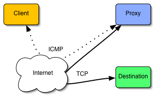

Ping TunnelFor those times when everything else is blocked.By Daniel Stødle, daniels@cs.uit.noLast updated: 5. September 2011ContentsWhat is it?Ptunnel is an application that allows you to reliably tunnel TCP connections to a remote host using ICMP echo request and reply packets, commonly known as ping requests and replies. At first glance, this might seem like a rather useless thing to do, but it can actually come in handy in some cases. The following example illustrates the main motivation in creating ptunnel:Setting: You're on the go, and stumble across an open wireless network. The network gives you an IP address, but won't let you send TCP or UDP packets out to the rest of the internet, for instance to check your mail. What to do? By chance, you discover that the network will allow you to ping any computer on the rest of the internet. With ptunnel, you can utilize this feature to check your mail, or do other things that require TCP.
| |
How it worksThis is a technical description of how ptunnel works. If you're not interested in low-level networking details, you can skip this section. It might help to read it either way, as it provides some insights into the situations where ptunnel doesn't work. Ptunnel works by tunneling TCP connections over ICMP packets. In the following, we will talk about the proxy, the client and the destination. The proxy is the "endpoint" for our ping packets, i.e. the computer that we send the ping packets to. The client is the computer we're trying to surf the net from, and the destination is the computer we would normally be trying to access over TCP (such as a web site or an ssh server somewhere).So, in order to accomplish this, we need the ability to send and receive ping packets. Many operating systems enable us to do this using so-called raw sockets. Raw sockets is the preferred mechanism for sending ICMP packets, and is used by both the proxy and the client. Unfortunately, raw sockets require root, so there is a provision for using standard datagram sockets if they are supported by the operating system (Mac OS X 10.2 or later supports this, but Linux systems will require root either way). Ptunnel supports this, however it is not recommended for actual use. We'll get back to the reason later. The client will perform all its communications using ICMP echo request (ping) packets (type 8), whereas the proxy will use echo reply packets (type 0). In theory, it is possible to have the proxy also use echo request packets (and thus make it operate without root), but these packets are not necessarily forwarded to the client beyond the host network, so they are not used. |
 |
The protocolThe proxy protocol uses four different message types combined with sequence numbers and an acknowledgement field. A magic number is used to differentiate our ping requests and replies from "usual" pings. The general packet format (not including the IP or ICMP headers) can be seen in the figure below.
Figure 2. The packet format used to exchange messages between client and proxy. The IP and port fields are only used in packets from the client to the proxy. They indicate where the client wants the received packets to be forwarded (they are really only used once - when the proxy receives the first message with state code kProxy_start).
|
State codes: kProxy_start = 0; kProto_data = 1; kProto_ack = 2; kProto_close = 3; kProto_authenticate = 4;
Identifier flags: |
|
The state code serves a dual purpose. First, it indicates what kind of message is being received - either a message starting a new proxy session (kProxy_start), a message containing data to be forwarded (kProto_data), an explicit acknowledgement of received packets (kProto_ack, a close message (kProto_close) or an authentication challenge/response (kProto_authenticate). Second, it indicates who sent the message: A message sent by the client will have the kUser_flag bit set, whereas a message sent by the proxy has the kProxy_flag bit set. This is necessary since a ping request will cause the operating system on the proxy computer to return its own echo reply, which is identical to the packet we just sent to the proxy.
The ack and seq fields are tightly related. Modelled after the use of acknowledgements in TCP, the ptunnel protocol places the sequence number of the last packet received into the ack field of any outgoing message. The seq field is a monotonically increasing 16-bit counter, that is allowed to wrap around (ok, so I guess it's monotonic until it wraps around). Whenever an outgoing packet has been waiting for an acknowledgement too long, the peer will attempt to resend the first packet not yet acknowledged. The length field simply indicates the length of the data portion of the packet, and is 0 for all other state values than kProto_data. Finally the rsv field contains two bytes that are reserved (for now they serve as padding). On receiving a kProxy_start request, a proxy will open a TCP connection to the server given by the ip and port fields. As data comes in over the TCP connection, the proxy will convert the data to ICMP echo reply packets, and send them to the remote peer. The client will do the same, except its packets will always be echo request packets.
AuthenticationAs of version 0.60, Ping Tunnel supports authentication. The authentication used is very simple, and works as follows. The user first specifies a password or passphrase, which is then hashed using the MD5 algorithm (Ping Tunnel uses the implementation by L. Peter Deutsch, available here. Note that the implementation is included with Ping Tunnel, so there is no need to download it separately).Whenever a proxy receives a request for a new tunnel, it will respond with an authentication challenge. The challenge consists of a timestamp augmented with random data, totalling 32 bytes. The response is calculated as follows (the + denotes string concatenation): md5(challenge + md5(password)) The proxy verifies the result by computing the same md5 sums, and then comparing the two. If authentication succeeds, the proxy allows TCP traffic to start flowing in either direction; if not, the connection is torn down.
Handling multiple connectionsThe proxy handles multiple different connections by using the ICMP identifier field. A client will randomly generate an identifier when it starts a session, and the remote peer will use this identifier to associate the packets with a connection. The mechanism is not foolproof, but works acceptably as long as no two instances attempt to use the same identifier (there is currently no mechanism for reporting such errors).The ICMP sequence number field is not used by ptunnel, mostly due to fears that some routers might drop packets whose sequence number repeats. Instead, a separate sequence number is used as part of the ptunnel packet format (see above).
Send and receive windowsPtunnel uses the simple concept of send and receive windows for controlling the number of packets that can be in-flight at the same time. The window is currently statically allocated at 64 packets, but the number can be tweaked by modifying the ptunnel header file (yes, a recompile is required). Increasing the window size will improve the maximum potential bandwidth. The send and receive windows are simply implemented as a set of circular arrays, with pointers indicating the next available send/receive slot, and the first non-acked packet.Handling packet lossPtunnel handles packet loss by resending (presumably) lost packets. As it sends packets, it will increment a sequence number. Both the client and proxy maintain their own sequence number, and also a number indicating the last sequence number acknowledged by the remote peer. Whenever too much time (1.5 seconds) passes without a packet being acknowledged, the peer will resend that packet.Note that the peer will only resend the first missing packet. Once that packet has been acknowledged, it may resend the next packet(s), depending on how many packets were acknowledged. If the next few packets are acknowlegded as well, they are removed from the send queue. It is not uncommon for one packet to get lost, with most of the others making it through. This mechanism avoids unecessary resends as much as possible.
Congestion controlPtunnel currently does no explicit congestion control. It will send as many ping packets as the window size allows, as slowly or as quickly as it sees fit. This might be improved in the future, if it turns out to be a problem (which is not at all unlikely..).When things don't workThere are a number of situations where ptunnel will fail. They can briefly be put into the following categories:
We can't handle the first failure - if our packets are filtered before we can get at them, there's little we can do. It is possible to deal with the second scenario by using the packet capturing library to get the packets before the OS sees them. This is necessary on Mac OS X, and may be necessary on other platforms as well. The problem lies in that the OS may occasionally not deliver ICMP packets to the raw socket we have opened for sending and receiving. This happens when the ICMP packet is an echo request (which the OS handles by itself) or when the ICMP packet is a resend (for some weird reason). The workaround is to use packet capture, however this tends to diminish bandwidth by quite a bit. For this reason, you should always try to run the proxy without packet capturing, and see if that works first. (This is the default mode.) | |
DownloadThe current version of ptunnel is 0.71, and the source code is available for download here. Some other links:
Ptunnel has so far been tested on a variety of configurations, including Linux Fedora Core 2 and Mac OS X 10.3.6 and above. Debian users can install Ping Tunnel by adding the following to /etc/apt/sources.list
deb http://www.cti.ecp.fr/~beauxir5/debian binary/ And then run apt-get update followed by apt-get install ptunnel. A big thanks to Romain Beauxis for taking the time to create a Debian package for ptunnel! As of version 0.70, ptunnel has support for Windows built-in, thanks to Mike Miller. You will need mingw and WinPcap (download here) installed to compile on Windows. Please note that I don't use Windows, so I can not provide support for compilation-specific issues regarding the Windows port. Wouter van der Veer has been kind enough to provide a compiled Windows binary on his website, which you can download here.
| |
Using ptunnelClient: ./ptunnel -p <proxy address> -lp <listen port> -da <destination address> -dp <destination port> [-c <network device>] [-v <verbosity>] [-f <logfile>] [-u] [-x password]Proxy: ./ptunnel [-c <network device>] [-v <verbosity>] [-f <logfile>] [-u] [-x password] The -p switch sets the address of the host on which the proxy is running. A quick test to see if the proxy will work is simply to try pinging this host - if you get replies, you should be able to make the tunnel work. The -lp, -da and -dp switches set the local listening port, destination address and destination port. For instance, to tunnel ssh connections from the client machine via a proxy running on proxy.pingtunnel.com to the computer login.domain.com, the following command line would be used: sudo ./ptunnel -p proxy.pingtunnel.com -lp 8000 -da login.domain.com -dp 22 An ssh connection to login.domain.com can now be established as follows: ssh -p 8000 localhost If ssh complains about potential man-in-the-middle attacks, simply remove the offending key from the known_hosts file. The warning/error is expected if you have previously ssh'd to your local computer (i.e., ssh localhost), or you have used ptunnel to forward ssh connections to different hosts. Of course, for all of this to work, you need to start the proxy on your proxy-computer (we'll call it proxy.pingtunnel.com here). Doing this is very simple: sudo ./ptunnel If you find that the proxy isn't working, you will need to enable packet capturing on the main network device. Currently this device is assumed to be an ethernet-device (i.e., ethernet or wireless). Packet capturing is enabled by giving the -c switch, and supplying the device name to capture packets on (for instance eth0 or en1). The same goes for the client. On versions of Mac OS X prior to 10.4 (Tiger), packet capturing must always be enabled (both for proxy and client), as resent packets won't be received otherwise. To protect yourself from others using your proxy, you can protect access to it with a password using the -x switch. The password is never sent in the clear, but keep in mind that it may be visible from tools like top or ps, which can display the command line used to start an application. Finally, the -u switch will attempt to run the proxy in unprivileged mode (i.e., no need for root access), and the -v switch controls the amount of output from ptunnel. -1 indicates no output, 0 shows errors only, 1 shows info messages, 2 gives more output, 3 provides even more output, level 4 displays debug info and level 5 displays absolutely everything, including the nasty details of sends and receives. The -f switch allows output to be saved to a logfile.
0.71 - 22. June 2009
0.70 - 12. January 2009
0.62 - Never released
0.61 - 26. May 2005
0.60 - 15. Apr 2005
0.55 - 18. Feb 2005
0.54 - 1. Feb 2005
0.53 - 31. Jan 2005
Thanks to Alfred Young for reporting and fixing the following bugs:
0.52 - 3. Jan 2005
0.51 - 2. Jan 2005
0.50 - 7. Dec 2004
FeedbackI'd be grateful for any feedback you may have - send it to me here: daniels@cs.uit.no. I'm interested in hearing about bugs, suggestions and naturally general criticism. If you find it useful, I'd love to know about that too :)
| |